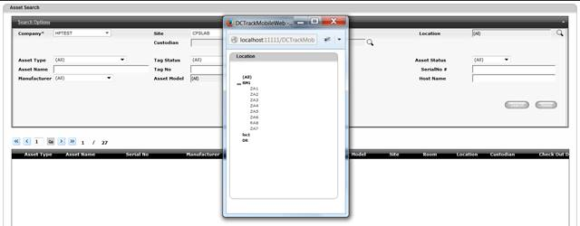

In some screens, Lookup/Search functionality is available (Magnifying glass) to enable user to search for specific item.
See sample below. To close the Lookup window and return to the original set, click the Close icon.

Figure 11: Lookup window
|
Copyright © 2019 Hewlett
Packard Enterprise,v5.2.
|